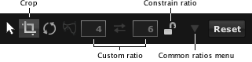

Ritaglia
Per rimuovere aree indesiderate o per portare l'attenzione sul soggetto principale può essere necessario ritagliare una foto. In tal caso, usare lo strumento Ritaglia.
Lo strumento ritaglia è diverso dagli altri. Viene sempre applicato a tutta la foto e non viene aggiunto alla pila strumenti.
Per ritagliare una foto:

- Fare clic sul pulsante dello strumento ritaglia nella barra degli strumenti. Sulla foto sarà visualizzato un rettangolo con una griglia; a destra della barra degli strumenti saranno visualizzati i comandi dello strumento ritaglia.
- Se si desidera applicare un rapporto d'aspetto alla foto, fare clic sul pulsante Vincola rapporto; sarà visualizzato un lucchetto chiuso. Sarà possibile selezionare un rapporto d'aspetto in uno dei seguenti modi:
- Selezionare un rapporto d'aspetto comune, come 3x5, dal menu Rapporti d'aspetto comuni.
- Usare un rapporto d'aspetto personalizzato inserendo l'altezza e la larghezza nei relativi campi di testo.
- Trascinare i bordi o gli angoli del rettangolo di ritaglio bianco nell'area che si desidera ritagliare.
- Per muovere tutto il rettangolo, fare clic al suo interno, poi trascinarlo.
- In alternativa, ruotare la foto per allinearla. Per farlo:
- Portare il mouse fuori dal rettangolo di ritaglio. Il mouse diventerà un'icona di rotazione.
- Fare clic e trascinare il mouse nella direzione in cui si vuole ruotare la foto.
- Fare clic sul pulsante a freccia per eseguire il ritaglio. Il rettangolo e i comandi dello strumento di ritaglio non saranno più visualizzati; la foto sarà ritagliata.
Nota: per iniziare nuovamente, fare clic sul pulsante Ripristina dello strumento ritaglia.